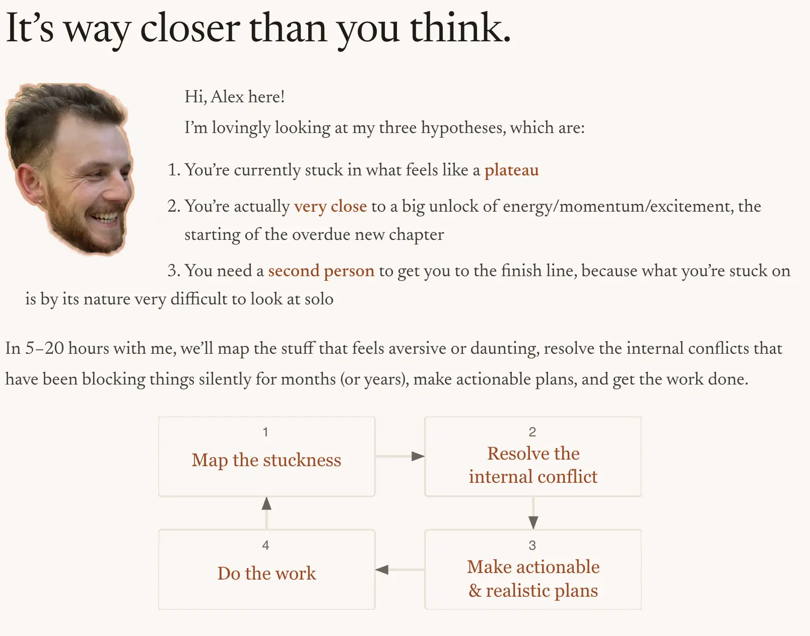
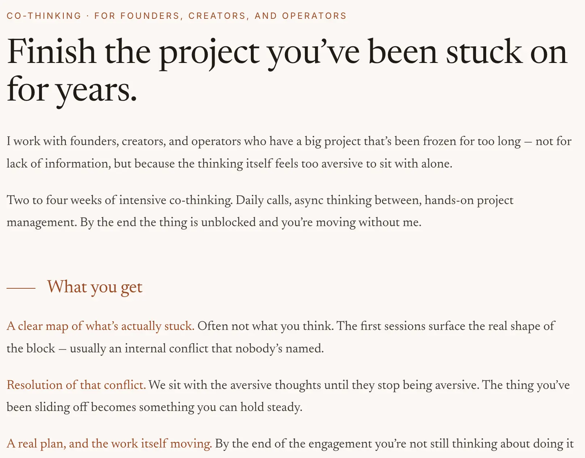
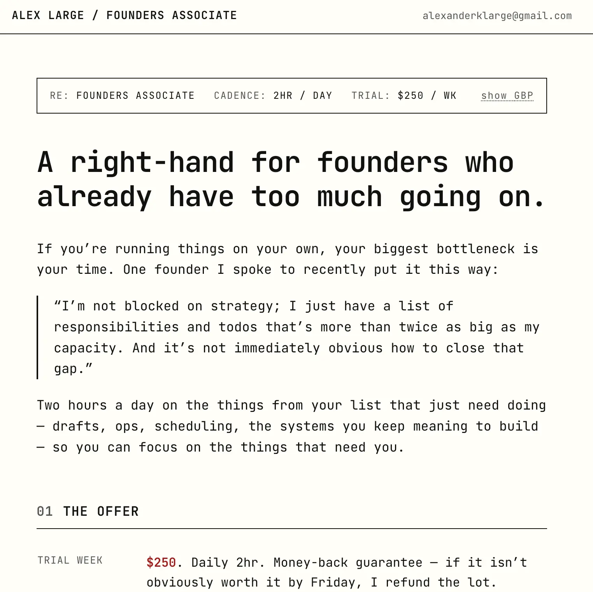

- Log per day - 2026
- Monday 2026-05-18
Context: £3k
- So I’m currently trying to make money, after a few years of mostly living off my savings whilst focusing on other things like e.g. my “post-rationalist healing arc” (What makes post-rationalism post-rationalism?)
- And now I’m down to like £3k, and expect to be totally out of money in a month, so it’s very much crunch time!
The sites
- I currently have 3 websites live (idk how long these will last, but here they are):
1. Co-thinker site
- Sillier one (has my head), unfinished but I like the home page, sent to inner circle of ~15 people asking for advice/connections etc

2. Founder-specific site
- Bit more polished, removed the silliness, real URL, more ambitious pricing

3. Founder’s Associate site
- Made this after someone I pitched was like “I’m not blocked on strategy/thinking, I’ve just got far too much on my plate”, which reminded me that this was Brent-of-Refract’s situation too (Brent’s reference)
- I would prefer to do thinking & strategy stuff than operations-y stuff but I could totally imagine a short-term operations-y sprint being satisfying, I’ve enjoyed operations work in the past, I was excited to get the Longview Philanthropy “Executive Assistant to the Office of the CEO” role and help unblock Sim (the CEO) and Gavin (the Chief of Staff) in a similar way

Stress!
- I slept terribly last night, stressing out about all of this.
- I ended last week having done a bunch - I think it was like, Monday = finished the co-thinker site, Tuesday = sent it to 19 friends asking for help/ideas/referrals, ~Wednesday made the FA site, etc. Also had a call with a great guy (Shai) who felt like me in 5-10 years and he was very encouraging
- But now I’m stressing about like, what if my pricing is wildly wrong? How the hell do I find people? What if I’ve been totally failing to do The Mom Test, what if Claude has been far too sycophantic?
- So ok, I do actually have good references, there is empirical “Alex is good at this stuff” stuff. But for Ediya, I didn’t get paid, for Brent, I didn’t get paid much at all over a full year.
- I’m stressing about something like: do I most like working with people who can’t actually pay me? That is, is my offering specifically aimed at people who can’t pay, and that’s why they’re stuck, because they’re at capacity. Vs any founder who actually has money would have hired to get help by now, so I’ve only helped people like Ediya and Brent who were at capacity so couldn’t make enough money for >1 person, so I helped them a bunch but it still took a long time for them to be able to afford >1 person.
- Stressed that a bunch of inner circle people are saying “nah I can’t think of anything” or “nah I’m good”
Messy middle
- Anyway, I think this is good, overall. This is the messy middle! This is showing that I’m right at my growth edge. I have no idea how to price myself, I have no idea how to evaluate this idea as a business. So the pain of that is getting me to read about microeconomics, about businesses, for the first time in my life. And the knowledge I gain will be practical and empowering.
- And, and this is one of the most exciting things about this whole venture: I’ll also be able to apply what I learn to my clients (and friends) too! Like, “oh I know a bit about business/pricing/etc”. New goggles through which to see the world, a profound and compounding win-win
- So yeah, I’m in the messy middle right now. Is ~coaching (although that’s not quite what this is, I am aiming for something more tangible and outcomes-focused) a lemon market? Is there no path to scaling or making enough to live off here? This is how I find out!! And as I get more data, I’ll be able to refine my offering, pivot as needed etc.
- It’s like, A B U → “A” ceiling, “A” frontier + A maturing to a B. I’m pick up a bunch of new knowledge, motivated by wanting to figure this stuff out (e.g., pricing, how to evaluate if a business is a good idea, etc), and I’ll get to mature the knowledge via empirical validation, from an abstract “A” to an empirically backed Popperian “truth” (a “B”)
- Let’s say I want to become a VC one day. This feels like step 1 (well, there’ll have been a bunch of prerequisites that I’ve gradually collected in order to get to this point, of course). Step 1 = attempt to go into business, get in the arena, flail about, etc. This is how I discover where I am confused, and gradually iterate. It feels stressful and I can blend with an overwhelmed part that is like “oh god, what if I never figure it out”, etc. But really it’s just, one step at a time…
Current open questions/stuff I wrote on my phone last night
- Tossing and turning and adding stuff to an Apple Note, lol
- “Pay what you want” at the end of week 1 and then we negotiate a rate?
- I bet [person who I haven’t contacted yet] could set me up with places that need help!!
- Have Claude ask me questions to figure out complimentary substack that I could write, to promote this - probably stuff about my tacit knowledge or opinions. “The unreasonable effectiveness of dialogue” or something
- Use to mom test to do outreach. Interview people about their actual problems? No website, don’t be daunting and too opinionated
- Am I targeting the total wrong people, under-capitalised (?) - read that deep research report about pricing and stuff
- Have Claude roast my cothibker offering, make a report as a business professor or something. Imagine this website I’ve made is for an undergraduate course or something. Red-team. Because I’m sure I’ll be doing stuff wrong but not having the language for it
- “Scaling” coach, to ensure I’m actually targeting ppl with some capital
- Offer a free week to people who do in fact have money, that is, founders in america, then negotiate from there if they like me
- free fractional CoS for a week
- Should I use this to get more of a “job”. Like, “hey, I’ve been offering this, but really I’d rather actually work with you”
Imagining what Shai might say
- Looking at all of the above, it does feel the answer is just “dude, try it out”
- Contact [person]
- Offer a free week (ridiculously good deal)
- “But what if it’s solopreneurs who can’t pay me!!” - then pivot/iterate
The problem is when you try to see the future
- “Can I do x?” (e.g. “can I do free work for someone for a week?“) = yes
- “Can I do x, and guarantee that it will lead to y?” (e.g., “can I only offer free work to people who will be able to pay me afterwards) = stressful
Presence of stress means presence of stress
- I think the causal structure goes something like this:
- Thinking about making money/thinking about how to price myself etc causes stress
- Because, it’s stressful to think about, as it triggers thoughts like “what if I don’t have any skills”, “what if I’ll never make money again”, stuff like that
- And it’s easy to then endorse those worries, but those worries are downstream of the stress
- I am trying to make money & facing the fact that I have £3k in the bank, and that brings about stress. The end. No need to get stuck in thought loops or endorse downstream worries
Appendix: Claude roast of my website
- Claude roast of my co-thinking site
Mr. Large. Sit down. Close the door.
I have looked at your little shop window and I have concerns. Not aesthetic concerns — the typography is fine, fine, you’ve clearly been reading too much Eye magazine — but economic concerns. Which, as you know, are the only concerns that matter once the rent comes due.
Item one: the sliding scale. A sliding scale, Mr. Large. On a premium service. Have you read anything? You are simultaneously asking the market to believe that (a) your work transforms the trajectory of three-year-frozen creative projects, and (b) you’ll do it for two hundred dollars if the customer makes a sad face. Pick one. In Akerlof’s terms you have constructed a lemon market for your own time — the buyer who values it most will pay the least, because they’re the ones who’ll ask. The buyer who could pay 400” and conclude that the $1,000 version must be for suckers, or worse, for marks. You have signalled that your reservation price is whatever the customer chooses to feel about it, which is to say — you don’t have one. Veblen is rolling.
Item two: the price itself is too low. By an order of magnitude. “2,200 to finish the thing you’ve been frozen on for three years.” Sir. Sir. If the buyer is a founder for whom this project represents real equity — and your case studies are a YouTuber with 400,000 subscribers and the founder of Alvea — then your offering is priced like a gym membership against an outcome worth, conservatively, six figures of future income. You have priced against your own testimonials. Ethan Alley is on your page saying you blew his mind. You are charging less than his accountant charges to file a 1099. This is not modesty; this is price-signaling incompetence. The market will assume the work is commensurate with the price, because that is what markets do.
Item three: the rhetorical question is doing the wrong job. “Is it worth that to actually finish?” You are answering your own pricing objection before the customer has raised it. Negotiating against yourself. In bargaining theory we call this “leaving surplus on the table” and in faculty meetings we call it “Mr. Large, please.”
Item four: the value proposition is non-falsifiable. “A clear map of what’s actually stuck.” “Usually an internal conflict that nobody’s named.” This is — and I say this with love, Mr. Large, with love — horoscope syntax. It works for the buyer who is already sold. It does nothing for the marginal skeptic who funds your growth. Where is the measurable deliverable? “The work itself moving” is not a unit. I cannot count it. I cannot regress on it. I cannot, frankly, defend it to my wife when she asks where the $2,200 went.
Item five: ICP confusion. “Founders, creators, and operators.” Three different buyers, three different decision processes, three different willingness-to-pay distributions. You have written a homepage for all of them and therefore for none of them. The YouTuber wants to know you understand the loneliness of a public-facing creative practice. The founder wants to know you’ve sat across from a term sheet. The operator wants to know you can read a P&L. Pick the one who pays best and write the page to him.
Item six — and this one stings, so brace yourself — the case study you lead with does not match the offer. Your headline says “founders, creators, and operators.” Your first, most prominent testimonial is a YouTuber working on her brand philosophy. That is a fine piece of work. It is not “finish the project you’ve been stuck on for years” in the sense that a founder reads that sentence. A founder reads that sentence and thinks fundraise, ship v2, hire the CTO. You are bait-and-switching, possibly unintentionally, and the founders are bouncing.
Now. In sum. You have built a beautiful little artifact that reads like a poem and prices like a panic. The work may well be extraordinary — Mr. Alley is not a man who blurbs lightly — but you have written the page of someone who is embarrassed to be charging at all. Fix the price. Kill the sliding scale on the public page (keep it as a private offer for the people who write to you). Pick one buyer. Make one promise that I, an economist, can measure.
Now get out, I have a seminar.